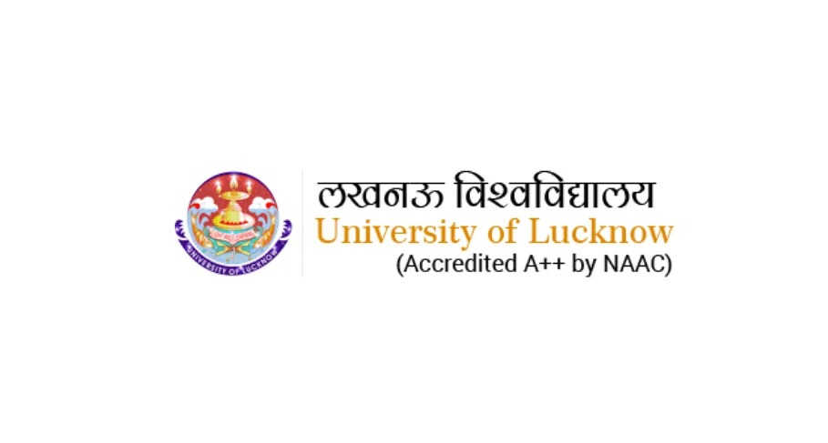

Lucknow University will offer an online Bachelor of Business Administration (BBA) and a Master of Arts (MA) in Sanskrit, Political Science, Economics, and English. The University Grants Commission (UGC) recently granted permission for LU to offer five additional courses online.
The University started offering BCom, MCom, and MBA degrees online from the academic session 2024-25. The degrees earned through these online courses will be equivalent to their respective regular degrees.
The varsity spokesperson Durgesh Srivastava said, “We will shortly open the admission window for the new online courses. The admission process for these courses must be completed by Nov 15. All relevant information will be made available on the website”. He added, “The BBA course consists of six semesters (three years), while MA courses comprise four semesters (two years). All study materials will be accessible to students online, and mentors will address their queries. Students must visit the campus only once for the semester examination.
He further stated that the advantage of introducing full-time courses in the online mode is that students can pursue them from any part of the country. Furthermore, this benefits several working professionals, students from humble backgrounds, and those who cannot leave their villages and districts to attend regular classes.
Lucknow University has initiated the online teaching process through the Luchknow University Center for Online and Distance Education (LUCODE) from the 2023-24 session. BCom and MCom courses have been conducted online since February 2024. The examinations for this session’s first semester were completed offline last month.
Lucknow University aims to contribute to transforming society for a better future. It stands for academic excellence and integrity. It is expected to maintain the highest ethical standards, be socially responsible, and be accountable to the University of Lucknow’s vision and mission. The University’s vision is to develop human resources for the furtherance of knowledge through teaching, research, and innovation and to rank amongst the world’s top educational institutions for better service to humanity in general and our nation in particular.